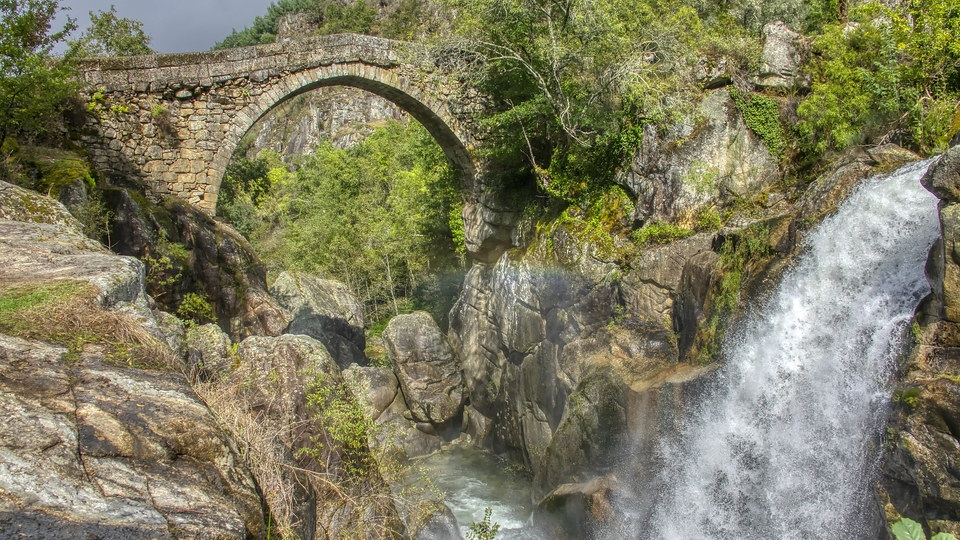

Douro Minho
Douro Minho Estremadura
Estremadura Madeira
Madeira
Trás dos Montes

Portugal é um país muito rico a nível de História, Cultura e Gastronomia. É um dos países mais bonitos do mundo com uma grande diversidade de paisagens, desde as montanhas do Norte até às praias do Sul.
Douro MinhoEstremaduraMadeiraQuando pensa numas férias em Portugal só lhe surgem imagens de sol e mar?
Ou um passeio de barco por entre os belos canais da ria de Aveiro?
Ou um passeio de barco no rio Guadiana, com vista para a cidade de Alcoutim?
Portugal é um país muito rico a nível de Gastronomia sendo o mar a característica da culinária Portuguesa com os melhores peixes do mundo e sempre fresco, tal como o marisco que abunda ao longo do litoral Português.
Alguns pratos de Peixe que se destacam em Portugal são as Cataplanas, Caldeiradas, Bacalhau, entre outros.
Alguns Pratos de Carne muito famosos em Portugal são o Cozido a Portuguesa com diversas carnes, legumes e enchidos, Feijoada à Portuguesa, Arroz de Cabidela , entre outros...
Os Produtos, mais famosos em Portugal internacionalmente são o famoso Vinho do Porto que é o melhor acompanhamento que o nosso país oferece, os queijos da Serra e Alentejo que são deliciosos e o famoso Pastel de Natas de Belém que fica sempre bem acompanhado por um cafézinho.